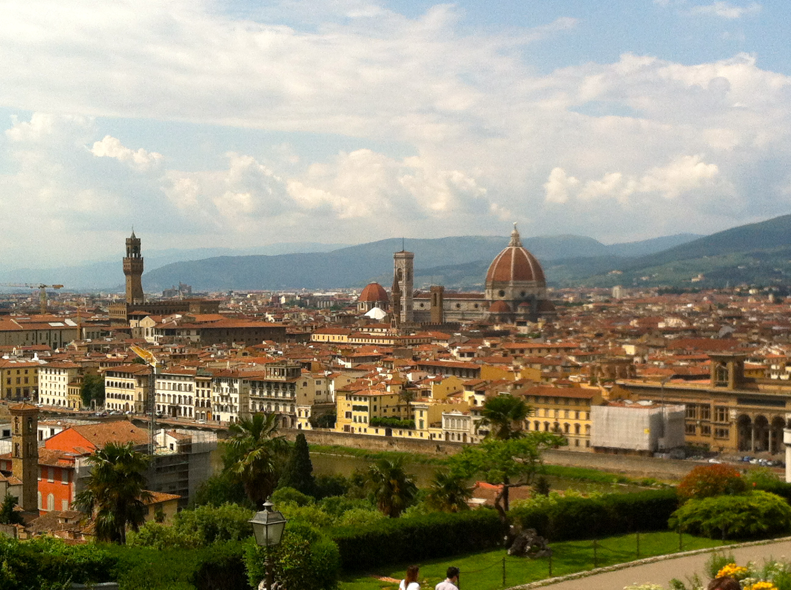

Firenze

Basic facts about Florence:
Area: 39.38 sq miles
Population: 371,282
Region: Tuscany
Florence is among the most visited cities. It has impeccable architecture, as well as upscale shopping! There are innumerable locations where one can escalate to a high elevation, and overlook the entire city of Florence.
One of these locations is Florence's greatest attraction!